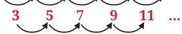

We know that the differences between consecutive perfect squares gives the sequence of odd numbers. Observe the figure below where the differences are computed successively for perfect squares. After two levels, all the differences are the same.
Perfect Squares
1 4 9 16 25 36 ...
Level 1: 3 5 7 9 11 ...
Level 2: 2 2 2 2 ...

Compute successive differences over levels for perfect cubes until all the differences at a level are the same. What do you notice?
Perfect Cubes
1 8 27 64 125 216 ...